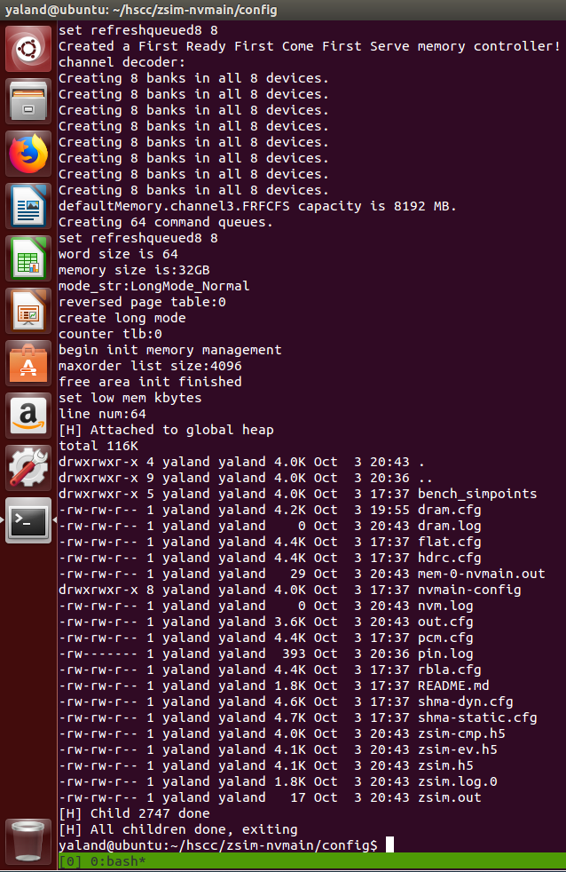
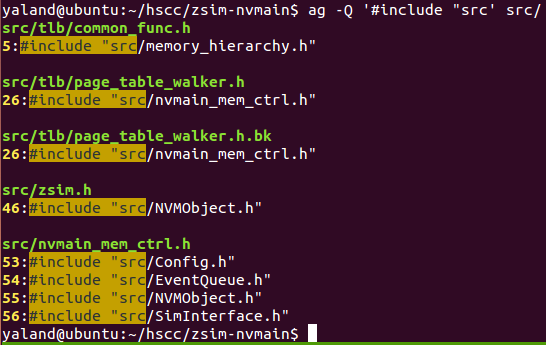

我在网上找到的关于ZSim/NVMain混合内存模拟器的编译教程大致分为两大类。一种使用的是原版ZSim，称为axle-zsim-nvmain。另一种使用的是华中科技大学计算机学院在原版基础上扩展后的ZSim，称为HSCC或SHMA。
上面两者我都自己尝试过，也碰到过不少问题，做过一些探究，在此予以记录。对于我未能解决的问题，希望各位读者能够给出答案。
本文编译的是扩展过的ZSim，即SHMA。关于axle-zsim-nvmain的编译过程详见我另一篇博客。两个仓库不完全相同，但很多内容是重复的，有些编译或运行错误也是一样的，我不多赘述。
环境
操作系统：Ubuntu 14.04 amd64（VMWare）
内核版本：4.4.0-142-generic
编译器版本：GCC 4.8.4
模拟器GitHub代码仓库：https://github.com/CGCL-codes/HSCC
模拟器Gitee代码仓库：https://gitee.com/NVM_Systems/HSCC
编译过程
相比于原版ZSim，HSCC自己简化了一些配置，但也制造了一些新的问题。下面是我自己的编译过程：
-
下载代码仓库。HSCC把ZSim、NVMain和PinTool全部放到一起了，直接把整个仓库拉下来即可。然后进入
zsim-nvmain文件夹。 -
安装各种依赖库。HSCC的依赖库相比axle-zsim-nvmain多了一个
glog。# 安装工具：scons gcc sudo apt install scons g++ # 安装依赖库：hdf5 libconfig libelf sudo apt install libhdf5-serial-dev libconfig++-dev libelfg0-dev # 安装依赖库：glog boost-regex(1.54) sudo apt install libgoogle-glog-dev libboost-regex-dev -
在
zsim-nvmain/env.sh里设置环境变量。按照HSCC的README里的说明设置好。大部分和axle-zsim-nvmain一样，但有几点不同：- HSCC自带Pin 2.13，所以不需要自己下载了，指向仓库里的位置即可
- 我用的boost库是系统库，所以填一个不存在的位置即可
- 设置
CPLUS_INCLUDE_PATH变量为一个点，具体原因请看文章最后的问题与思考 - 其它变量暂时用不到，删了
PINPATH=$PWD/pin_kit #指向pin_kit路径 NVMAINPATH=$PWD/nvmain #指向NVMain路径 ZSIMPATH=$PWD #指向SConstruct所在路径 BOOST=fakepath CPLUS_INCLUDE_PATH=. export ZSIMPATH PINPATH NVMAINPATH BOOST CPLUS_INCLUDE_PATH -
在
SConstruct第28左右的位置，把echo -e中的-e去掉。具体原因请看后面的问题与思考。else: env.Command(versionFile, allSrcs + ["SConstruct"], # 去掉这里的-e 'echo -e "#define ZSIM_BUILDDATE \\""`date`\\""\\\\n#define ZSIM_BUILDVERSION \\""no git repo\\""" >>' + versionFile) -
在
src/pin_cmd.cpp第53行左右的位置，在几个args pushback里添加一行代码。args.push_back("-ifeellucky");因为Pin 2.13对Linux 4.x内核的支持性不好，不加这一行会报错：
E:4.4 is not a supported linux release -
编译模拟器。在axle-zsim-nvmain目录下运行scons编译。
-j参数可以指定多线程加速编译过程。编译完成后在bin文件夹下会生成libzsim.so和zsim两个文件。scons -j2 -
用
ldd命令检查生成的二进制文件，没有库缺失。$ ldd -r bin/libzsim.so linux-vdso.so.1 => (0x00007fff4a7f5000) libconfig++.so.9 => /usr/lib/x86_64-linux-gnu/libconfig++.so.9 (0x00007fc7961a2000) libglog.so.0 => /usr/lib/x86_64-linux-gnu/libglog.so.0 (0x00007fc795f6a000) libboost_regex.so.1.54.0 => /usr/lib/x86_64-linux-gnu/libboost_regex.so.1.54.0 (0x00007fc795c63000) ....
运行模拟器
配置文件
这里我选择config/dram.cfg这个配置。这个配置不能直接拿来用，要做一些修改。
首先是gmMBytes不能太大，至少你内存要能装得下。
gmMBytes = 8192; // Simulator heap size in MB
然后是负载部分，把process0改成我们自己想要运行的程序。
process0 = {
command = "ls -ahl";
};
系统设置
给pinbin二进制文件增加执行权限。
chmod +x pin_kit/intel64/bin/pinbin
同axle-zsim-nvmain，让系统允许Pin向负载进程注入代码：
sudo sysctl -w kernel.yama.ptrace_scope=0
运行结果
在config文件夹中运行模拟器，配置文件为dram.cfg。
cd config
../bin/zsim dram.cfg
运行结果如下。模拟器输出了很多信息，包括DRAM、内存控制器、页表等各个模块的初始化参数。然后是ls命令的输出。由于终端打印出的内容很多，这里只截图输出的最后的一部分。

问题与思考
我在编译HSCC中，碰到过不少问题，也了解过不少命令的含义，为的是想要搞清楚这些问题的来源。在此予以记录，希望能解决一部分人的疑惑。
确保换行符是LF
An error happen when change a config file · Issue #5 · SEAL-UCSB/NVmain
NVMain在读取配置文件的时候无法正常处理CRLF换行符，会把\r也当成是配置的一部分，导致SIGSEGV等问题。
失败经历：编译依赖库
undefined symbol: gzwrite · Issue #174 · s5z/zsim
我之所以使用Ubuntu 14.04，是因为诸如boost这些依赖库都可以通过apt安装，没必要自己重新编译。
我最开始是自己编译ZSim的各个依赖库的，比如boost等。但是最后出现了无法解决的问题。ZSim无法启动，总是提示undefined symbol错误，找不到gzopen/gzwrite等函数。
undefined symbol: gzwrite
undefined symbol: gzopen
我怀疑是hdf5这个库的问题。apt show libhdf5-dev给出的依赖关系中有zlib1g-dev。但是我一开始没装zlib，也成功编译hdf5了。这就有问题了。即使我之后安装了zlib，还是报一样的错误。我用Ubuntu 14和Ubuntu 16都是这样。
目前我还没有搞清楚为什么自己编译的libhdf5无法链接到系统的zlib。
我猜HSCC是在Ubuntu 12编译的。如果换成Ubuntu 14，就会多出一些问题来。如果换成Ubuntu 16，又会有新的问题。
CPLUS_INCLUDE_PATH
详解Linux下环境变量C_INCLUDE_PATH、CPLUS_INCLUDE_PATH、CPATH以及常见错误
StackOverflow：CPLUS_INCLUDE_PATH doesn’t works
我最开始直接用的axle-zsim-nvmain的配置，没有加CPLUS_INCLUDE_PATH这个环境变量，结果编译报错，提示有个头文件找不到：
In file included from build/opt/page-table/comm_page_table_op.h:7:0,
from build/opt/tlb/page_table_walker.h:16,
from build/opt/init.cpp:78:
build/opt/tlb/common_func.h:5:34: fatal error: src/memory_hierarchy.h: No such file or directory
#include "src/memory_hierarchy.h"
^
compilation terminated.
scons: *** [build/opt/init.os] Error 1
scons: building terminated because of errors.
问题出在HSCC的tlb/common_func.h这个文件。你会发现和ZSim其他文件相比，唯独这个文件的include加了一个src/。
结论是，GCC先在当前目录（也就是TLB文件夹）里搜索头文件，找不到。然后就去ZSim代码的根目录（也就是zsim-nvmain/src）下搜索，也找不到，于是报错。
再回过头来看CPLUS_INCLUDE_PATH的作用。我删掉的是env.sh下面这一行：
CPLUS_INCLUDE_PATH=$CPLUS_INCLUDE_PATH:$HDF5/include
env脚本涉及到不少环境变量，这些变量必须要export才生效
| 变量 | 作用 |
|---|---|
| C_INCLUDE_PATH | 等效于gcc的-I参数，添加头文件的包含路径 |
| CPLUS_INCLUDE_PATH | 等效于g++的-I参数，添加头文件的包含路径 |
| LD_LIBRARY_PATH | 增加动态链接库的路径 |
| LIBRARY_PATH | 增加静态链接库的路径 |
使用env命令查看所有环境变量，没有发现上面这几个变量，所以这些变量全部为空。一般系统默认也不会设置这些东西。也就是说，env.sh脚本里的那种用冒号拼接的写法，同时包含了两个路径：当前路径（也就是zsim-nvmain文件夹）和HDF5的路径。
那么，在zsim-nvmain里当然可以找到src文件夹了。
解决的方法有很多，只要让GCC能够找到指定的头文件即可。我上面选择了最省事的方法，直接添加一个头文件的搜索路径。但我不认为这是一种好的做法，原因在于NVMain文件夹里也有一个src。随便乱包含头文件的路径的话，很容易导致重名的头文件发生冲突。而GCC对此是不会报错的，它只会使用它最先搜索到的那个文件。观察ZSim其它文件，加了src前缀的include都是NVMain的头文件。

echo错误
先说结论：echo是一把双刃剑。如果只是单纯输出字符串和变量，那么echo很方便。但凡是要输出更复杂的东西，比如反斜杠转义，建议用printf命令。因为不同版本的echo命令行为不同。
之前在编译HSCC的时候，出现过一个错误：
In file included from build/opt/zsim_harness.cpp:47:0:
build/opt/version.h:1:4: error: stray ‘#’ in program
-e #define ZSIM_BUILDDATE "Sun Jan 10 15:23:15 CST 2021"
^
build/opt/version.h:1:1: error: expected unqualified-id before ‘-’ token
-e #define ZSIM_BUILDDATE "Sun Jan 10 15:23:15 CST 2021"
^
我查看生成的build/opt/version.h，确实开头多了个-e：
-e #define ZSIM_BUILDDATE "Sun Jan 10 15:23:15 CST 2021"
#define ZSIM_BUILDVERSION "no git repo"
我认为这是由于scons底层执行的是C语言的system()函数，而这个函数执行的是dash，而不是我们常用的bash。对于echo -e hello这个命令，到dash里执行就会有个-e，而bash则没有。
axle-zsim-nvmain的echo是没有
-e的，而最新的ZSim已经改用printf了。所以我也不知道HSCC为什么会有这个-e。